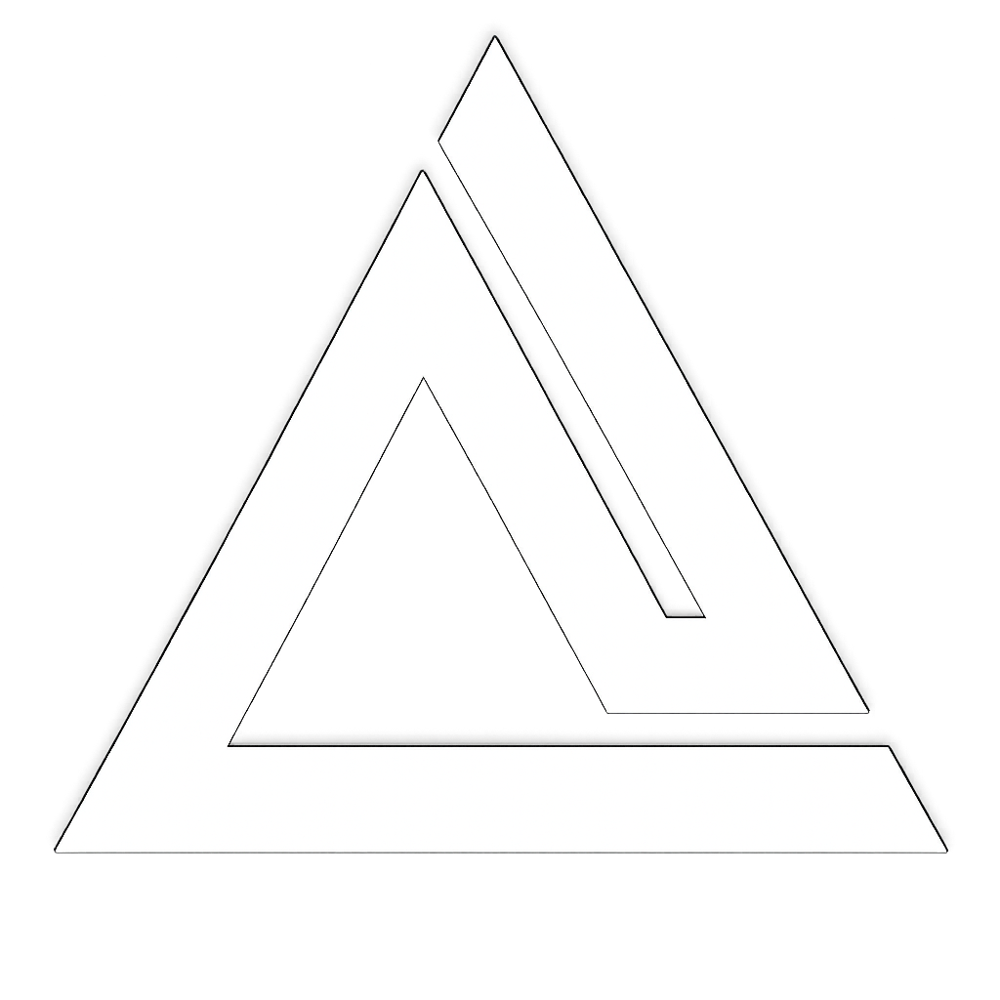

PLEASE ROTATE YOUR PHONE
TURN YOUR DEVICE TO LANDSCAPE MODE FOR THE 4K STUDIO EXPERIENCE

// ART CONTEST
CARGANDO SHADERS Y CAPAS 4K: 0%
// ART CONTEST
Contest Entry by Blackbeard
►
00:00
00:40
⚡ SCANNER
⛶ 4K FULLSCREEN
